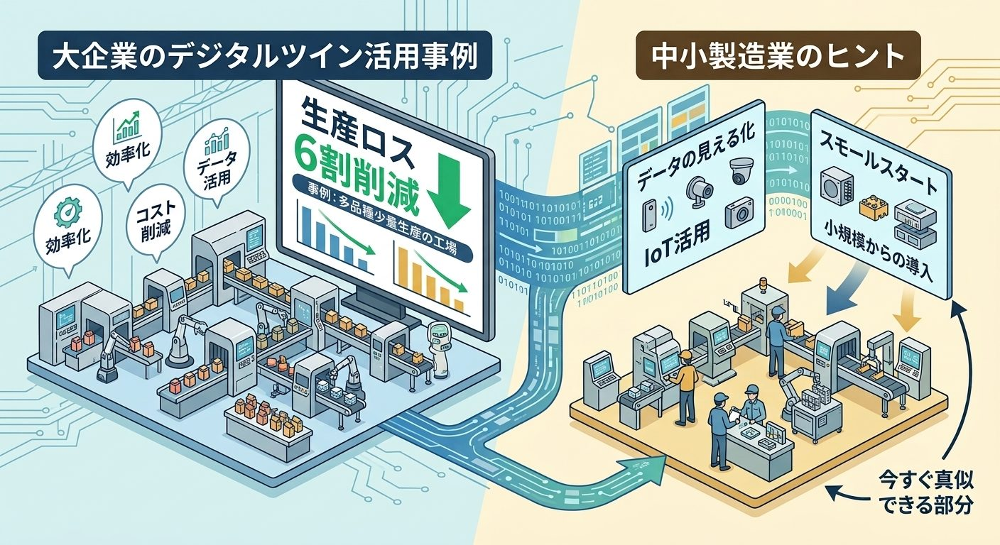

実際に成果を出している大企業のデジタルツイン活用事例を見ながら、そこから中小製造業が取り入れられる考え方を整理します。
大企業のデジタルツイン活用は、すでに「生産ロス6割削減」レベルまで進んでいます。その中には、多品種少量生産、つまり中小製造業と同じ条件の工場も含まれています。規模の大きさに気後れする必要はありません。学べる部分は、確かにあります。

ダイキン工業、生産ロスを6割減らした工場
ダイキン工業の堺製作所臨海工場では、2020年頃からデジタルツインを本格的に活用しています。
工場内の設備にセンサーやカメラを取り付け、部品の流れや組み立て、塗装、プレスといった工程の状況を、逐次デジタル空間に再現する仕組みです。
最初からうまくいったわけではないようです。故障を予知する仕組みは、当初は誤報も多かったと報告されています。それでも保全チームが運用を継続し、実際に発生すれば半日ほどラインが止まってしまうような大きな設備故障を、事前に検出できるようになっていきました。
その結果、2024年度の実績では、生産ロスを全体で6割削減。設備故障に由来する生産ロスに限れば、8割の削減を達成しています。
ここで注目したいのは、最初から完璧だったわけではないという点です。見える化して、予測して、外れたら直す。このサイクルを回し続けたことが、成果につながっています。
日立製作所、多品種少量生産でもリードタイムを半減
もう一つ、日立製作所の大みか事業所の事例です。
この工場は、電力や鉄道、上下水道といった社会インフラ向けの制御盤を作っています。約8万個のRFIDタグと450台のリーダーを使い、人とモノの動きをきめ細かく把握する仕組みを構築しました。
この事例が中小製造業にとって示唆的なのは、大量生産のラインではないという点です。この工場は多品種少量生産、つまり毎回違う仕様の製品を、一つひとつ作っています。
多くの中小製造業は、毎回違うものを、少しずつ作るという条件のもとにあります。大量生産のラインを持つ大企業の話は、遠く感じられることもあると思います。
しかし日立の事例は、まさにその条件でも成果を出せることを示しています。結果として、代表製品の生産リードタイムを50%短縮しています。
旭化成、熟練者の技をどこにいても再現する
技術継承という観点でも、参考になる事例があります。
旭化成は、化学プラントごとに製造する製品が異なり、それぞれに専門知識を持った熟練者が必要な業種です。各プラントに配置できるベテラン技術者は、30人の技術者に対して2、3人という水準にとどまっているといいます。
ベテランが出張中や退社後に、設備の異常が起きることもあります。そこで旭化成は、ベテランが現場にいなくても、遠隔からあたかもその場にいるかのように対応できる仕組みとして、化学プラントのデジタルツインを構築しました。
これは単なる効率化ではなく、少数の熟練者の技を、限られた人数のまま、より広い範囲に届けるという発想です。技は人に宿るものですが、その技が発揮される「場」を、デジタルツインが広げてくれる。そこに大きな可能性があります。
中小製造業が、ここから借りられるもの
大企業と同じ規模の投資はできません。それでも、考え方は借りられます。
①「見える化・予測・改善」のサイクルという発想
ダイキンの取り組みの核は、高価なシステムそのものより、このサイクルを回し続けたことにあります。規模を問わず取り入れられる考え方です。
②誤報から始めても構わない、という姿勢
最初から完璧な予測はできません。まず測り始めて、外れたら直す。この前提を持っておくだけで、導入のハードルは下がります。
③多品種少量生産でも、デジタルツインは機能する
日立の事例が示す通り、「毎回違うものを作っているから無理だ」という理由は成立しません。むしろ、ばらつきの大きい現場ほど、感覚に頼っていた部分を数値化する価値は大きくなります。
④技は、人に宿ったまま広げられる
旭化成の事例は、熟練者を増やす話ではありません。今いる熟練者の技を、より広い範囲で活かす話です。中小製造業でも、一人のベテランの判断基準を記録し、共有できる形にするだけで、同じような効果が期待できます。
まずは、小さく始めること
大企業の事例は、規模の大きさに気後れしてしまうかもしれません。
ですが、いずれの企業も最初は一つの工程、一台の設備から始めています。省力化の第一歩は、機械選びではなく、現場の作業を洗い出すことです。まず現状を見える化し、そこから予測し、改善する。このサイクルの入り口に、大きな投資は必要ありません。
大企業の実践から学べるのは、規模ではなく順番です。
アイツインは、中小企業をデジタルツインで最適な状態に仕上げ、確かな技を未来へつなぎ、関わるすべての現場を笑顔にしていきます。
参考
-
ダイキン工業「止まらない工場」の取り組み（ITmedia Virtual EXPO 2025 夏 講演内容より）
https://monoist.itmedia.co.jp/mn/articles/2510/23/news002.html -
日立製作所 大みか事業所の生産革新
https://www.hitachi.com/ja-jp/press/articles/2016/10/1025/ -
旭化成 化学プラントのデジタルツイン（日経クロステック、会員限定記事）
https://xtech.nikkei.com/atcl/nxt/column/18/01970/030200006/